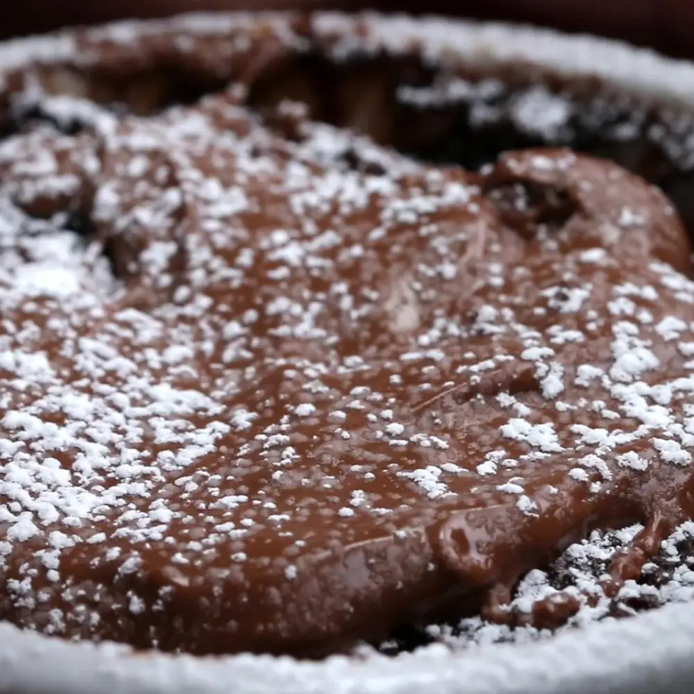

Mug Cake

Description
A quick and easy mug cake that can be made in just a few minutes with your microwave!
Ingredients
- 4 tablespoons flour
- 3 tablespoons sugar
- 2 tablespoons cocoa powder
- ½ teaspoon baking powder
- 3 tablespoons milk
- 1 tablespoon oil, vegetable or canola
- 1 teaspoon vanilla extract
- 1 tablespoon chocolate hazelnut spread, plus more for topping
- Powdered sugar, for topping (optional)
Instructions
- In a 12-ounce (375 ml) mug or larger, mix all ingredients (except the
chocolate hazelnut spread) until just combined.
- Once combined, spoon the chocolate hazelnut spread on top of the batter.
- Microwave on high for 90 seconds to 2 minutes, watching to make sure it
doesn't spill over (depending on the size of the mug).
- Let cool one minute before eating. Top with additional chocolate hazelnut
spread and powdered sugar (optional).